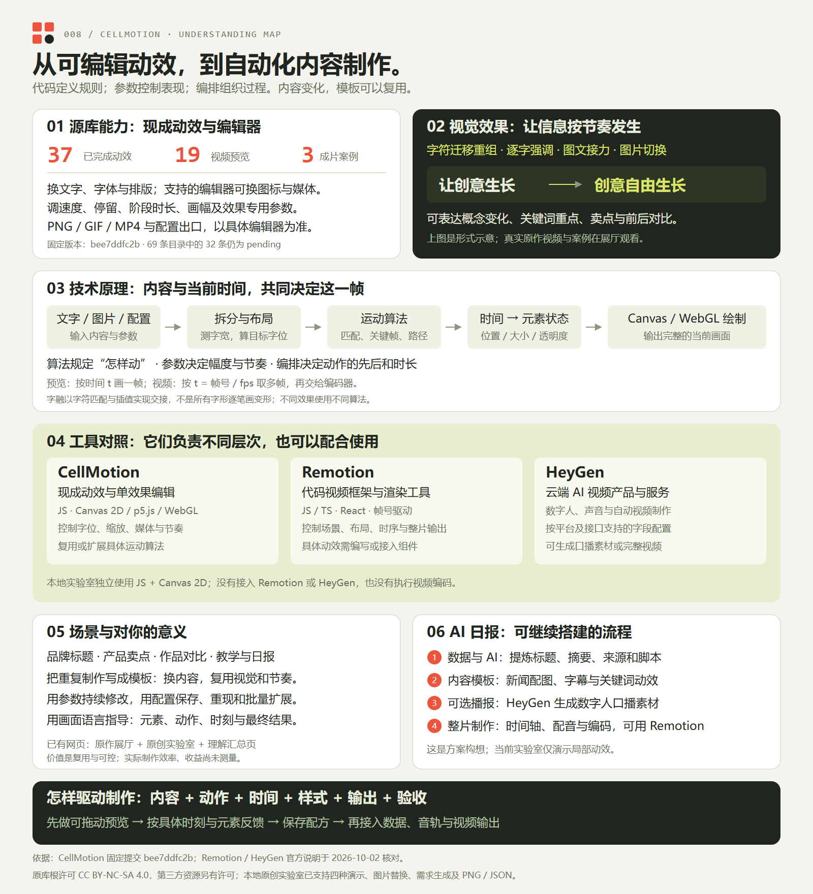

文字与排版
中文、多语种、逐行文案、字体、字号、字距、对齐与位置。部分编辑器可在指定字位插入图标。
创意 → 设计
01 / ORIGINAL MOTIONS
从文字、图标到图片。
先看原作，再理解运动如何发生。

理解引导图 · 点击放大 ↗SOURCE EFFECTS / OUR EXPERIMENTS / FULL UNDERSTANDING
源库提供可编辑动效；我们的实验室用代码、参数和时间计算每一帧。这里保留完整效果、制作方法、Remotion / HeyGen 对比与个人价值，AI 日报作为后续扩展方案。
37 个已完成动效 · 19 项原作视频预览 · 其余提供静态封面与原编辑器入口
MADE OF MOTION
官网「成片案例」的三支原作。点击播放，观察文字、图标和画面的接力。
02 / CAPABILITIES
选一种现有运动编排，把自己的内容交给它。
中文、多语种、逐行文案、字体、字号、字距、对齐与位置。部分编辑器可在指定字位插入图标。
使用内置图标或上传图片、GIF。支持媒体的编辑器还可更换视频背景、设置逐段背景和裁剪区间。
调整速度、停留、阶段时长，以及效果特有的放大、间距、方向等参数。每个动效保留自己的运动逻辑。
设置横屏、竖屏或方形画布。PNG 保存一帧，GIF / MP4 保存运动过程；格式、尺寸和帧率以各编辑器为准。
在「字融」原编辑器中把首行改为「中文动效研究」，画布随之重绘。左图是实际导出的 1080 × 1080 PNG，保留了原方案中的图标。
下载实测 PNG ↓已验证中文修改与 PNG 导出；GIF / MP4 为源码核对，未做本轮导出实测。部分编辑器已有「用于 AI」菜单，可复制提示词、配置代码和组件 JSON。它把当前文案、画幅、字体、素材与时间参数描述出来，供接入现有运行时。通用网页组件在官网仍标为规划中，接入效果需逐项核验。
拖动时间轴，观察删字、迁移和增字。此图用原创简化代码突出三个过程；上方展厅播放原库作品。
x(t) = x₀ + (x₁ − x₀) × ease(p)p 是当前阶段的时间进度，ease 决定起步与收尾的速度。
把文字拆成字符，把图标作为独立单元；按字体测量宽度，计算字位。
Intl.Segmenter · measureText字融按字符 key 匹配前后句；其他效果可使用关键帧、路径、粒子或物理规则。
matchGlyphs · keyframes根据 t 找到当前阶段，计算位置、缩放、透明度和颜色，再绘制这一帧。
resolveTimeline · renderFrame现代文字效果可用 Canvas 2D；部分早期和立体效果使用 p5.js / WebGL。
Canvas 2D · p5.js · WebGL按 t = 帧号 / fps 重绘，送入 GIF 或视频编码器；预览与导出复用时间逻辑。
RGBA frames · H.264 / GIF「字融」并非逐笔画变成另一个字。源码匹配重复字符并移动字位，对删字和增字处理缩放与透明度。字阶则使用字形框关键帧插值，其他效果有自己的算法。
查看匹配与绘制源码 ↗04 / WHEN TO USE IT
下面是基于效果特征的使用建议，点击可回到对应原作。
动态口号、活动标题、开场字标。用字符重组表达变化，用逐字放大强调重点。
产品功能介绍、搜索流程、发布会屏幕。每一拍承载一个信息，避免同时塞满画面。
修图前后、视觉方案对比、商品与照片展示。快门和翻面给切换一个明确的发生时刻。
短视频章节标题、知识点轮播、课程开场。少量关键词逐次出现，配合后续剪辑与配音。
把已经编排好的运动作为起点，把时间花在文案、素材和节奏上。适合反复制作风格一致的动态片段；复杂长片、音轨混合与自由时间线剪辑仍需其他工具配合。
05 / SCOPE & SOURCES
研究快照：2026-10-02 · 上游提交 bee7ddfc2b
以目录状态为准，待上新动效未当作已完成能力展示。
站内视频拼接尚未开放。具体导出格式与参数以所选编辑器为准。
视频和封面从作者站点加载，需联网。原理示意在本页运行，不执行原库导出。
仓库根许可为 CC BY-NC-SA 4.0；第三方字体与参考效果有各自许可。商业项目需先核对具体效果授权。